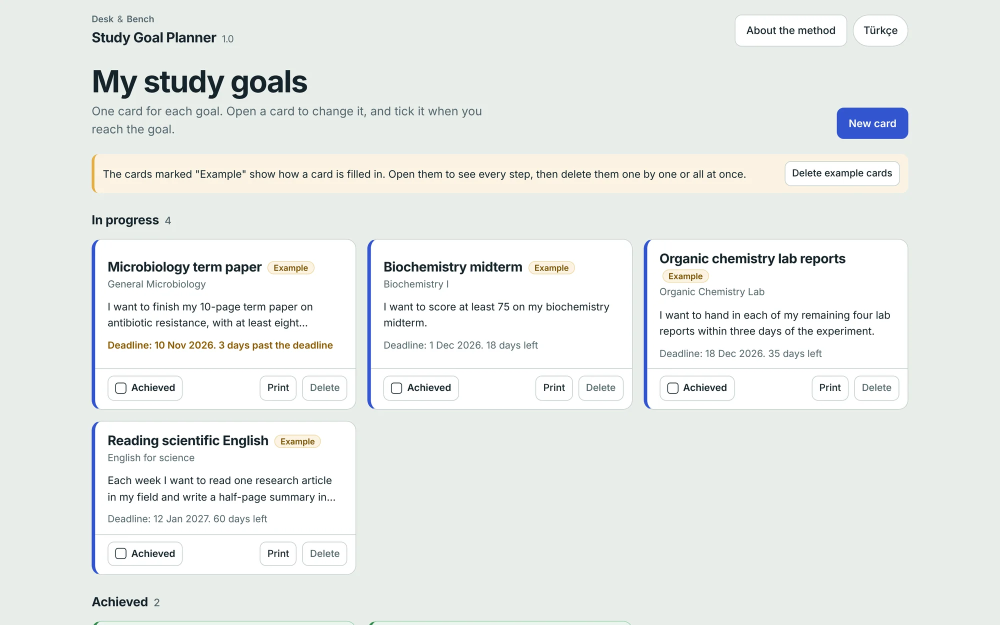
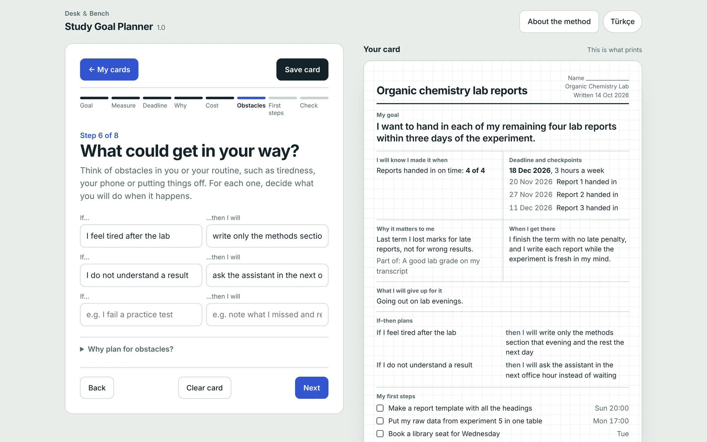

Study Goal Planner
Turn a study goal into a one-page plan in eight short steps: what you want, how you will measure it, by when, why it matters, what you will give up, what could get in the way and your first steps.
Version 1.0. In English and Turkish. Free, with no account; your cards stay in your own browser.

What Study Goal Planner does
It is made for students: one card for each goal in a course, from an exam to a term paper or a reading habit.
Eight guided steps
Each step asks one question and shows an example answer. A short note explains why the step helps, with the research behind it.
If–then plans
Name what could get in your way and decide in advance what you will do when it happens.
A card for each goal
See your goals in one list, with the days left until each deadline. Tick a card when you reach the goal and it turns green.
Print or save as PDF
Every card fits on one A4 page. Six example cards show how a card is filled in; delete them when you are ready.

How to use it
- Open the plannerWith the button above, on a phone, tablet or computer.
- Keep it closeAdd the page to your bookmarks or to your phone’s home screen.
- Look at the examplesOpen an example card, then start your own with “New card”.
- Back up now and thenUse “Back up all cards” at the bottom of the list.
Questions
Where are my cards stored?
In the browser you use the planner in, on your own device. They are never sent to a server, and they do not appear on another phone, computer or browser. Clearing your browser data erases them, so back them up regularly.
How do I use it on my phone?
Open the planner with the button above, then add it to your home screen: in Safari, use the Share menu and “Add to Home Screen”; in Chrome on Android, use the menu and “Add to Home screen”. Nothing is installed; it is a shortcut to the page.
I use an iPhone or iPad. Is there anything to know?
Safari may delete the data a website has stored if you have not opened it for about a week. Opening the planner from your home screen makes this less likely, and a backup keeps your cards safe either way.
Can I use it without the internet?
Download the ZIP, extract it and open study-goal-planner.html in Chrome, Edge or Firefox on your computer. It works offline. Cards in the downloaded file are separate from cards you write on the website.
How do I move my cards to another device?
Use “Back up all cards” on the old device, then “Restore from backup” on the new one. Restoring adds the cards from the backup and keeps the cards you already have.
Can I use it in Turkish?
Yes. Use the “Türkçe” button at the top. The example cards switch to Turkish too.
Where do the steps come from?
From research on goal setting, mental contrasting and if–then plans, and from the SMART checklist. “About the method” in the planner lists the sources.
Can I change it or build on it?
Yes. Study Goal Planner is open source under the MIT License. You may use, change and share it, including in your own projects, as long as you keep the copyright notice and the licence text, which credit the original author. The source is on GitHub and the licence is in LICENSE.
I found a bug or have a suggestion.
You can report it on GitHub Issues. Open GitHub Issues